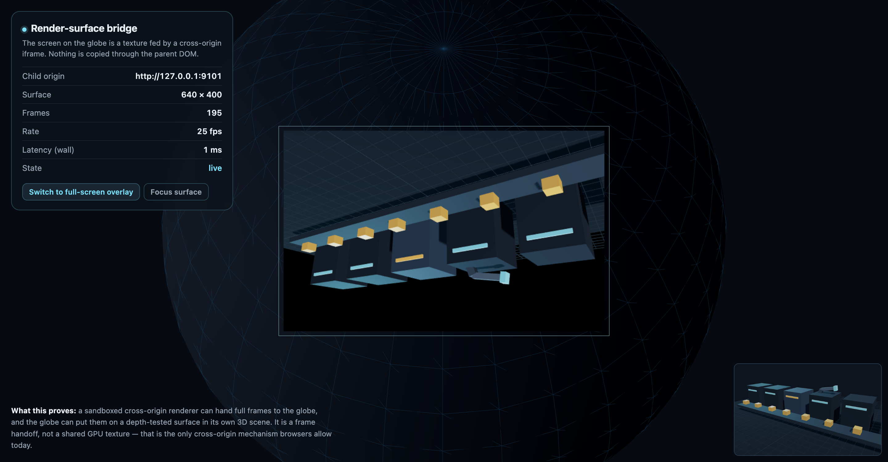
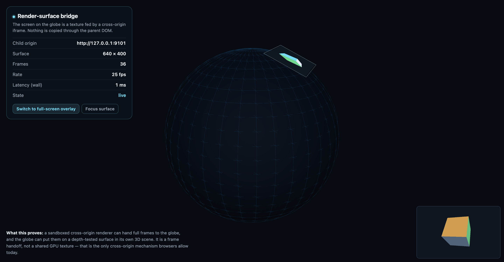

Render buffers do not cross origins.
I tried to put a full foreign render scene onto the globe. The result is a frame handoff, not a shared GPU texture: a sandboxed iframe renders, transfers a frame, and the globe uploads it to a plane in its own scene.

What works
A WebGL child and a WebGPU child both hand frames over. The WebGPU path needs a texture → buffer → RGBA readback; createImageBitmap(canvas) returned an empty bitmap for a WebGPU canvas in Chrome. The globe never touches the child's GPU resources.

What does not work
Cross-origin WebGLTexture/GPUTexture/GPUDevice sharing is not exposed. SharedArrayBuffer needs COOP/COEP and shares CPU bytes, not GPU memory. document.domain is removed. A CORS bypass is a bug, not a design. The “unsafe framebuffer insertion” is not a capability you can turn on.
Why it is still not shipped
The renderer is not the bottleneck; the maps host is. The current sandbox gives an app no surface, no WebGPU, no RTX; it can only postMessage. The host needs a ctx.surface capability that owns the texture, anchor, depth test and rate cap. That patch is written, but the real maps.ce-net.com host source is not in this workspace, so the demo stays on localhost.
On three-rs
three-rs is real: 0.3.0, 100/215 gradeable three.js pages, WebGPU wasm, glTF, headless readback. It is not drop-in: unstable API, native Vulkan-only (macOS needs a Metal patch), no generic runtime-GLB viewer, and glTF cameras/lights are not imported. It belongs in the child or a first-party module, behind a pinned version.